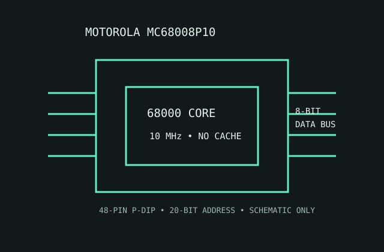

[ MOTOROLA 68000 FAMILY // 8-BIT EXTERNAL BUS ]
Motorola MC68008P10
A single-core 68000-family processor that kept the programmer-visible 32-bit architecture while narrowing the external data bus for lower-cost systems.

MODEL IDENTIFICATION: MC68008P10, 10 MHz plastic DIP ordering variant. Distinguish it from MC68000 parts: the external bus and address space are different.
Recorded specifications
| Model | MC68008P10. |
|---|---|
| Generation | Early Motorola 68000 family; first-generation 32-bit CISC architecture (1980s). |
| Architecture / cores | Motorola 68000 ISA family; one 32-bit CPU core; no multicore or SMT. |
| Frequency / cache | 10 MHz speed grade; no on-chip cache. |
| Package / socket | 48-pin plastic dual-inline package (P-DIP); socket footprint must match the board's exact 48-pin pinout. |
| Power | 5 V nominal single supply. It is not assigned a modern TDP; size the regulator and thermal design to the exact grade's maximum current and dissipation in the data sheet. |
| Memory / bus | 8-bit external data bus, 20-bit address bus (up to 1 MiB directly addressed); external memory controller and RAM are board components. |
| Board compatibility | Requires a board designed for MC68008 bus timing, 5 V signaling and the 48-pin package. It is not a drop-in MC68000 replacement; check chip selects, wait states, clock, reset and memory decode. |
Compatibility notes
- Do not infer external bus width from the 32-bit programmer-visible registers.
- Confirm the P10 speed grade, socket orientation, supply tolerance and board timing before powering a restoration.
- Use the board's memory map and glue logic as the compatibility authority; no PC-style CPU socket applies.
Sources & further reading
- Motorola MC68008 data sheet (Bitsavers technical archive)Manufacturer-authored data sheet archive for ordering grades, bus, package and electrical characteristics.
- Motorola M68000 Microprocessor User's Manual, Rev. 8 (Bitsavers)Manufacturer manual archive for family architecture, bus cycles and system design context.